I really wanted to go to Yaku Island and to see Jomon sugi in my life. That is one of Japanese symbols, and is in the province of "Kyushu" I live. However I didn't have any confidence to complete this plan. Because this trip need tough work to walk 10 hours. For that I climbed up the mountains that surround our town every week for 2 months, and yet the mountains are not so high, about altitude of 300 m. After preparing I took part in Yaku-shima and Jomon-sugi tour.
To enlarge, click some photos which have titles in light blue color background.
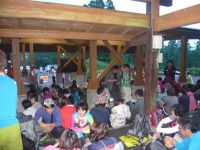 |
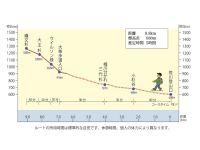 |
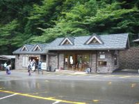 |
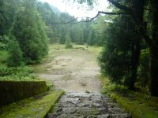 |
| the bus stop | a guide map | Arakawa starting point | the ruin of Kotani Village |
Very early morning we left the Hotel and after 30 minutes we got the bus stop in the big parking lot which was the base of the mountain. Waiting a bus, we had simple breakfast there. Then the bus took us to Arakawa starting point for a climb for 30 minutes. We walk on railway and climb up to Jomon Sugi for more than 5 hours. On the way we passed the ruin of Kotani Village which some people lives as the base of working before the government forbid cutting Yaku-sugi.
"Yakusugi is a Japanese term for Cryptomeria that are more than 1,000 years old.
In general, the Japanese cedar lives for about 500 years, but yakusugi trees live much longer. They grow on less nutritious granite soil slowly and have a very tight grain. The wood contains a lot of resin due to Yakushima's high rainfall and high humidity, making it resistant to rotting. As a result, these trees tend to have longer lives, and many larger trees have survived for more than 2,000 years."
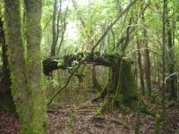 |
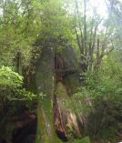 |
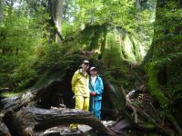 |
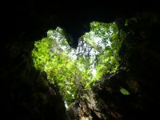 |
| the unique cedar | the three generation cedar | Wilson Stump | Wilson Stump |
the unique cedar
I heard that the unique cedar was a model of the character in a Director Miyazaki's animation movie.
Sandai-sugi, the three generation ceda
a height of 38.4 m
a trunk circumference of 4.4 m
an age of about 500 years old
an elevation of 740 m
The first generation fell down at about 2,000 years old, the second generation was cut down at 1,000 years old and the third generation has survived,
Wilson Stump
This tree was cut about 300 years ago and the cedar cut was estimated as below.
a height of 42 m
a trunk circumference of 13.8 m
an age of about 2,000 years old
an elevation of 1,030 m
The heart mark that is made by natural light and the hollow of Wilson stump is famous.
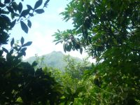 |
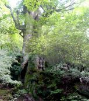 |
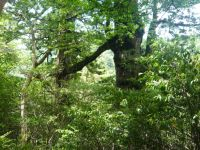 |
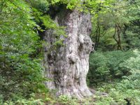 |
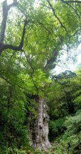 |
| Mount Miyanoura | the great king cedar | the pair cedar | Jomon Sugi | Jomon Sugi |
Mount Miyanoura
Rain in Yaku-shima is so much. It is said that at level land one day in two days is rain and in mountain two days in three days are rain.
Our guide said that almost every day we would get rain, if small rain was included, and none might forecast the weather exactly.
We also got rain for half hour from the end of railway to near Wilson stump. I thought that It was rather good to experience heavy rain of Yaku-shima. After raining I saw Mount Miyanoura, which was seldom seen form here, our guide said.
Mt. Miyanoura is the highest mountain in the province of Kyushu and the altitude is 1,936 m.
Daio-sugi, the great king cedar
a height of 24.7 m
a trunk circumference of 11.1 m
an age of about 3,000 years old
an elevation of 1,190 m
Myoto-sugi, the pair cedar
a height of 25.5(22.9) m
a trunk circumference of 5.8(10.9) m
an age of about 1,500(2,000) years old
an elevation of 12030 m
The left side is the wife cedar and the right side is the husband cedar, (DATA). Distance of them is 3m and they have the branch merged as if they take hands each other.
Jomon Sugi
a height of 25.3 m
a trunk circumference of 16.4 m
an age is estimated to be between 2,170 and 7,200 years old.
an elevation of 1,300 m
Jomon sugi is a large cryptomeria tree (yakusugi) located on Yakushima, a UNESCO World Heritage Site, in Japan. It is the oldest and largest among the old-growth cryptomeria trees on the island.
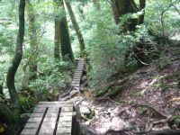 |
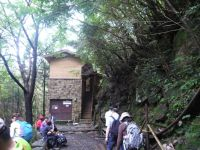 |
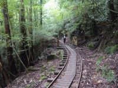 |
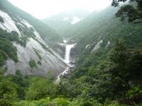 |
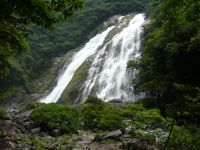 |
| mountain path | from here to footpath | tramcar railway | Senpiro Waterfall | Okawa Waterfall |
We took the same way to back as long walking. Passing through mountain path to the mountain cottage and walking railway, we made effort to get the base place.
Here a lot of rain make marvelous waterfalls with abundant water.
Senpiro Waterfall This waterfall has the huge rock of a side of slope. The rock width was said "Senpiro" which means a thousand of the width which is the length of both arm spread. However it is just expression as great rock.
And it's height is 60m.
Okawa Waterfall This waterfall, 88m in height, is the best one in this island with height and the quantity of water.
{kind=link}
{kind=link}
{kind=link}
{kind=link}
{kind=link}
{kind=link}
{kind=link}
{kind=link}
{kind=link}
{kind=link}
{kind=link}
{kind=link}
{kind=link}
{kind=link}
{kind=link}
{kind=link}
{kind=link}
{kind=link}